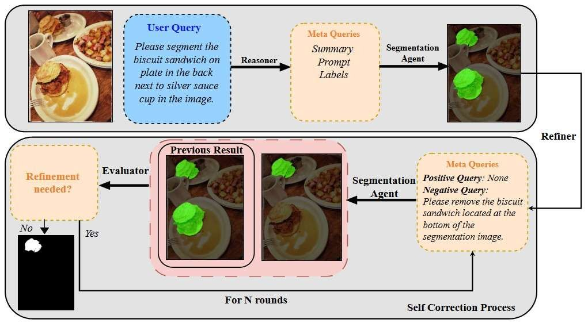

ICLR 2026 workshop paper
CoT-Seg
Reasoning segmentation with multimodal LLMs. Given a plain-language request, the system reasons about what to find, proposes a mask, checks its own result, and corrects it over several rounds.
This was my final-year research project at HKUST.